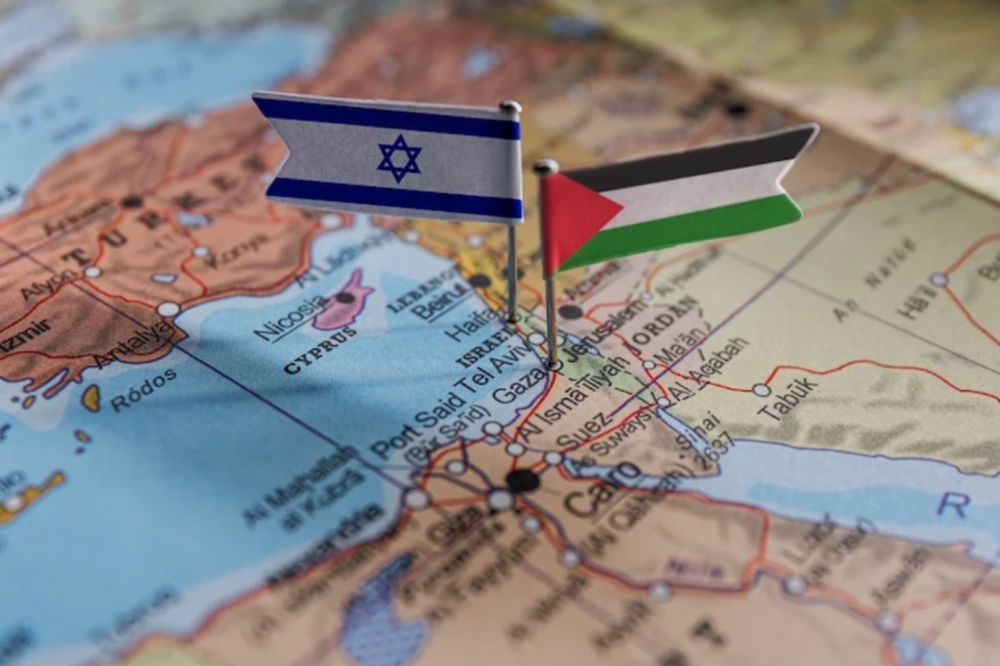

Conflito Israel e Palestina

O conflito entre Israel e Palestina é uma disputa territorial e política que remonta ao início do século XX. A região da Palestina era parte do Império Otomano até o fim da Primeira Guerra Mundial, quando passou a ser administrada pelo Reino Unido. Com o crescimento da imigração judaica e a Declaração de Balfour (1917), aumentaram os confrontos entre árabes e judeus.
A ONU propôs, em 1947, a partilha da Palestina em dois Estados: um judeu e um árabe. Os judeus aceitaram, mas os árabes rejeitaram. A criação do Estado de Israel em 1948 gerou a primeira guerra árabe-israelense. Desde então, ocorreram várias guerras e intifadas. O conflito gerou milhões de refugiados palestinos e impactos profundos nos países vizinhos.
Eventos-Chave
- 1948: Criação de Israel, primeira guerra árabe-israelense.
- 1967: Guerra dos Seis Dias – Israel ocupa Gaza, Cisjordânia e Jerusalém Oriental.
- 1987 e 2000: Primeira e segunda Intifada – levantes palestinos.
- 1993: Acordos de Oslo – tentativa de solução com dois Estados.
- 2023: Nova escalada de violência entre Hamas e Israel.
Além das questões históricas, fatores como religião, recursos hídricos e o controle de Jerusalém também intensificam a disputa. A Faixa de Gaza, sob controle do Hamas, vive bloqueios constantes de Israel e Egito, afetando drasticamente a economia e a qualidade de vida da população palestina.
Atualmente, a falta de consenso entre lideranças políticas e a expansão de assentamentos israelenses em territórios palestinos dificultam uma solução pacífica. De acordo com a ONG Human Rights Watch, mais de 2 milhões de palestinos vivem em condições precárias em Gaza. A comunidade internacional segue dividida, com alguns países apoiando Israel e outros reconhecendo o Estado Palestino.
Pandemia e Aumento da Miséria Mundial

A pandemia de COVID-19 agravou desigualdades sociais no mundo todo. Segundo o Banco Mundial, mais de 120 milhões de pessoas entraram na extrema pobreza em 2020. A crise afetou especialmente trabalhadores informais e populações vulneráveis em países em desenvolvimento.
Impactos Sociais e Econômicos
- Desemprego global atingiu níveis recordes em 2020.
- Mais de 1 bilhão de crianças ficaram fora das escolas no auge da pandemia (UNESCO).
- Redução no acesso a serviços de saúde e alimentação básica.
- Desigualdade no acesso a vacinas entre países ricos e pobres.
Em regiões da América Latina e da África Subsaariana, a crise sanitária foi agravada pela falta de infraestrutura hospitalar. A economia informal, predominante nesses locais, sofreu grandes perdas, forçando milhões de pessoas à fome e ao endividamento.
Segundo a Organização Internacional do Trabalho (OIT), cerca de 255 milhões de empregos em tempo integral foram perdidos em 2020. Diversos programas de ajuda humanitária e políticas emergenciais foram adotados, mas nem sempre foram suficientes ou eficazes.
A pandemia também causou migrações internas e externas, com famílias buscando melhores condições de vida. A ONU alertou que, sem ações globais coordenadas, os efeitos da pandemia na pobreza podem durar mais de uma década.
Grupos Terroristas e seus Impactos
O terrorismo é um fenômeno global. Grupos extremistas como o Talibã, Al-Qaeda, Boko Haram e o Estado Islâmico causam instabilidade política e deslocamentos populacionais massivos. Suas ações geram medo, violação de direitos humanos e a necessidade de ajuda humanitária internacional.
Grupos mais Ativos
- Talibã (Afeganistão): retomou o poder em 2021, impondo regime fundamentalista.
- Estado Islâmico: atuante no Oriente Médio, com atentados na Europa e África.
- Al-Qaeda: conhecida pelos ataques de 11 de setembro nos EUA.
- Boko Haram: aterroriza a Nigéria e países vizinhos, sequestrando civis e atacando escolas.
Estima-se que mais de 30 milhões de pessoas no mundo tenham sido deslocadas por causa de conflitos armados e terrorismo (ACNUR). Esses grupos utilizam a internet para recrutamento e disseminação de ideologias extremistas.
O combate ao terrorismo envolve ações militares, cooperação internacional, combate à radicalização e inclusão social. Em muitos casos, jovens são aliciados por falta de oportunidades, educação e perspectivas de futuro.
Além da violência direta, o terrorismo afeta a economia, o turismo, o comércio e os investimentos estrangeiros, agravando ainda mais a pobreza e o subdesenvolvimento nas regiões afetadas.
Podcast Explicativo
Escute nosso podcast com explicações e comentários adicionais sobre os temas abordados no site. Essa gravação resume os principais pontos sobre os conflitos, a pandemia e os impactos sociais discutidos neste trabalho.